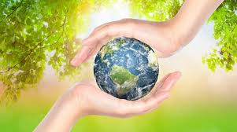

El 22 de abril de cada año se celebra el Día Mundial de la Tierra. Su nacimiento viene del movimiento ambientalista moderno, el cual se inició en 1970 cuando 20 millones de norteamericanos tomaron las calles, los parques y los auditorios para manifestarse por un ambiente saludable y sustentable.
Una movilización a favor de la preservación del medio ambiente, hace 46 años, alertaba a la humanidad sobre el cuidado a la Tierra. ¿Por qué se celebra el Día Mundial de la Tierra? El 22 de abril se celebra el Día Mundial de la Tierra. Esta fecha fue elegida porque el 22 de abril de 1970 una manifestación en Estados Unidos para que se creara en el Gobierno una agencia ambiental que trabaje sobre las problemáticas medioambientales. El impulsor de la protesta fue el senador y activista ambiental Gaylord Nelson, quien convocó a miles de universidades, escuelas primarias y secundarias entre otras comunidades a participar del pedido. Gracias a la expresión social el Ejecutivo estadounidense creó Environmental Protection Agency (Agencia de Protección Ambiental) y varias leyes de protección del medio ambiente. Dos años después se llevó adelante el encuentro a nivel mundial: Cumbre de la Tierra de Estocolmo. La intensión es sensibilizar a la humanidad de que es parte del planeta Tierra y sus huellas marcarán el destino del mundo, por eso reducir (el consumo), reciclar y reutilizar objetos es la forma en que cada uno día a día puede colaborar para evitar la contaminación ambiental.
El Día de la Tierra de 1970 logró una coincidencia política que parecía imposible. Se logró el apoyo de políticos de distintas tendencias, ricos y pobres, citadinos y granjeros, magnates y líderes sindicales. Ese día condujo a la creación de la Agencia de Protección al Medio Ambiente de Estados Unidos y a Nuestro Planeta en Cifras la aprobación de leyes relacionadas con el aire limpio, el agua limpia y la conservación de especies en peligro de extinción. A partir de entonces, cada año en esta fecha, el mundo entero reflexiona y se moviliza por una Tierra mejor.
medio ambiente es el conjunto de componentes físicos, químicos, biológicos, de las personas o de la sociedad en su conjunto.Comprende el conjunto de valores naturales, sociales y culturales existentes en un lugar y en un momento determinado, que influyen en la vida del ser humano y en las generaciones futuras. Es decir, no se trata solo del espacio en el que se desarrolla la vida, sino que también comprende seres vivos, objetos, agua, suelo, aire y las relaciones entre ellos, así como elementos tan intangibles como la cultura
Los beneficios al cuidar el medio ambiente nos ayuda a vivir en un mundo mejor,dejando a un lado algunos de nuestros habitos de la vida diaria. El dejar a un lado los combustibles fosiles como el petroleo,que nos a ayudado a progresar en la vida pero nos a dejado consecuencias serias ayudando el aceleramiento del calentamiento global arrojando Co2 (dioxido de carbono) a nuestro planeta y asi acelerando y haciendo el cambio climatico que hoy en dia vivimos.Dependemos mucho del petroleo que nos sirve para:transporte,energia y etc,pero hoy en dia hay muchas alternativas para disminuir ese impacto ambiental,reduciendo las cantidades de Co2 de nuestro planeta. Lo mismo pasa con arrojar desechos,que ha la larga estamos destruyendo la naturaleza,los desechos peligrosos hasta toxicos contaminando y/o bosques y rios en el mundo. Si dejaramos a un lado y reemplazarlos por lo que es amigable con el medio ambiente? Ten por seguro que viviremos en un mundo mejor,limpio y sin problemas.
Calentamiento global y cambio climático se refieren al aumento observado en los últimos siglos de la temperatura media del sistema climático de la Tierra y sus efectos.2 Múltiples líneas de pruebas científicas demuestran que el sistema climático se está calentando.3 4 Aunque a menudo la prensa popular comunica el incremento de la temperatura atmosférica superficial como medición del calentamiento global, la mayor parte de la energía adicional almacenada en el sistema climático desde 1970 se ha usado en calentar los océanos. El resto ha fundido el hielo y calentado los continentes y la atmósfera.5 nota 1 Muchos de los cambios observados desde la década de 1950 no tienen precedentes en décadas, aun milenios.6 La comprensión científica del calentamiento global ha ido en aumento. En su quinto informe (AR5) el Grupo Intergubernamental de Expertos sobre el Cambio Climático (IPCC) señala que en 2014 los científicos estaban más del 95 % seguros de que la mayor parte del calentamiento global es causada por las crecientes concentraciones de gases de efecto invernadero (GEI) y otras actividades humanas (antropogénicas).7 8 9 Las proyecciones de modelos climáticos resumidos en el AR5 indicaron que durante el presente siglo la temperatura superficial global subirá probablemente 0,3 a 1,7 °C para su escenario de emisiones más bajas usando mitigación estricta y 2,6 a 4,8 °C para las mayores.10 Estas conclusiones han sido respaldadas por las academias nacionales de ciencia de los principales países industrializados11 nota 2 y no son disputadas por ninguna organización científica de prestigio nacional o internacional.13
Diferentes tipos de contaminación están clasificados por su parte que afectan o resultan por las causas de contaminación particulares. Cada uno de estos tipos tiene sus propias causas y consecuencias distintivas. El estudio de la contaminación ambiental ayuda a entender los conceptos básicos con mayor detalle y producir protocolos para los tipos específicos. En consecuencia, los principales tipos de contaminación son:
-Contaminación del Agua -Contaminación del Aire -Contaminación del Suelo -Contaminación Térmica -La Contaminación radiactiva -Contaminación Acústica -Contaminación Lumínica
EN MI comunidad las personas no son limpias , sin embargo cada quien se esfuerza para lograr algo pero como en cada colonia simpre esta los problemas presentes como la basura en las calles animales atropellados y lo principal los borrachos las bandkitas de la esquina(caifanes)y los drogaditos